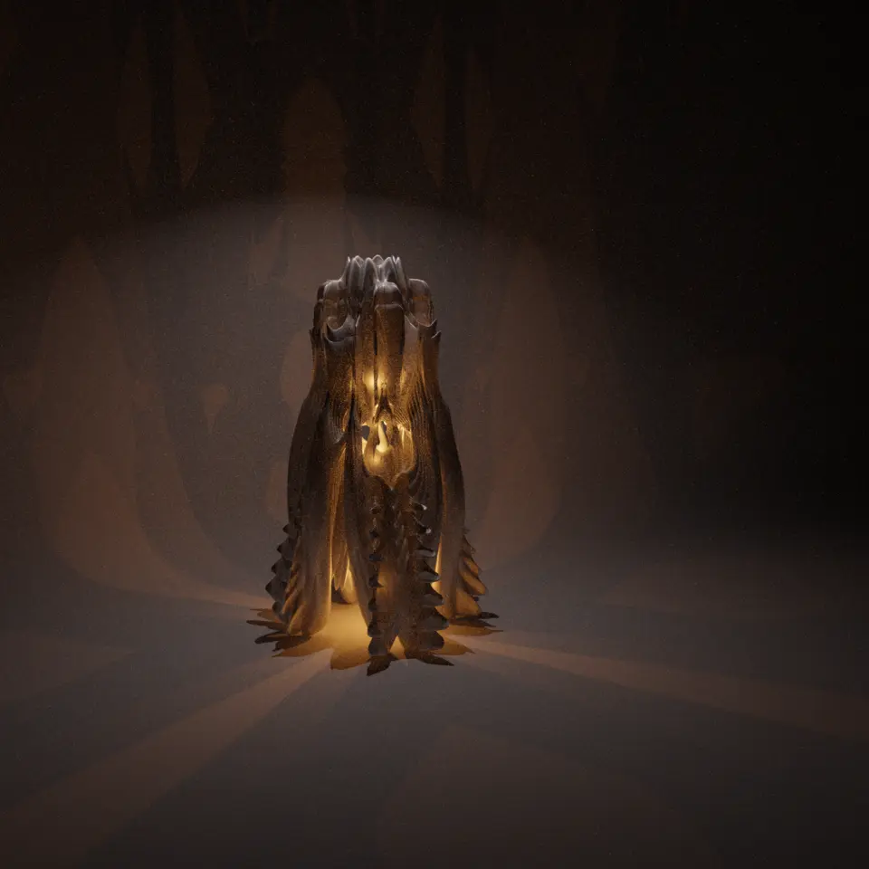
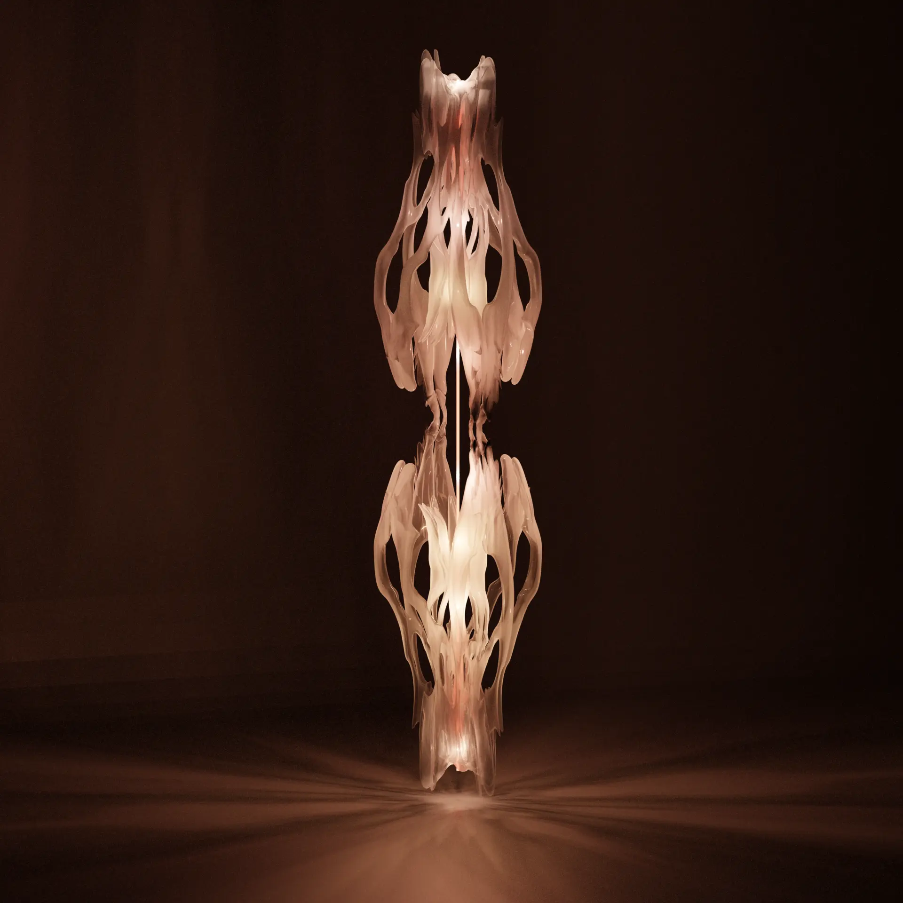
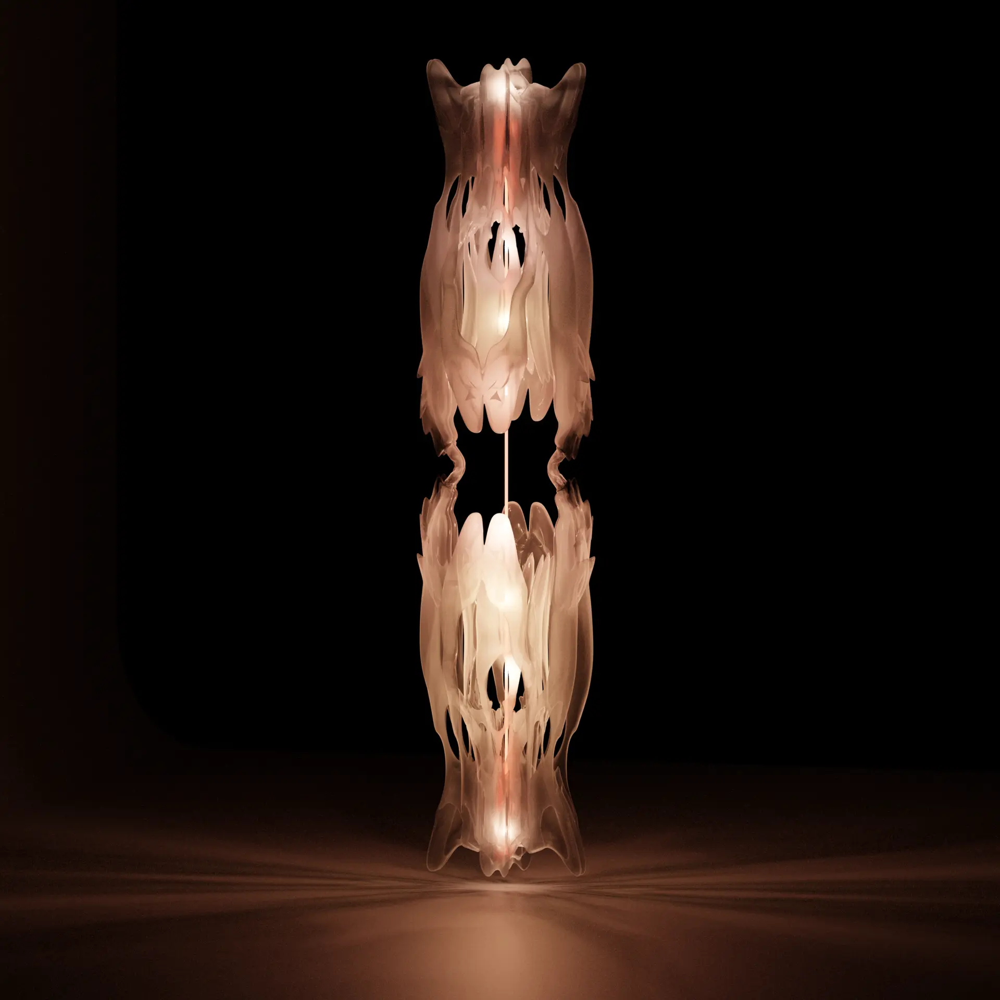
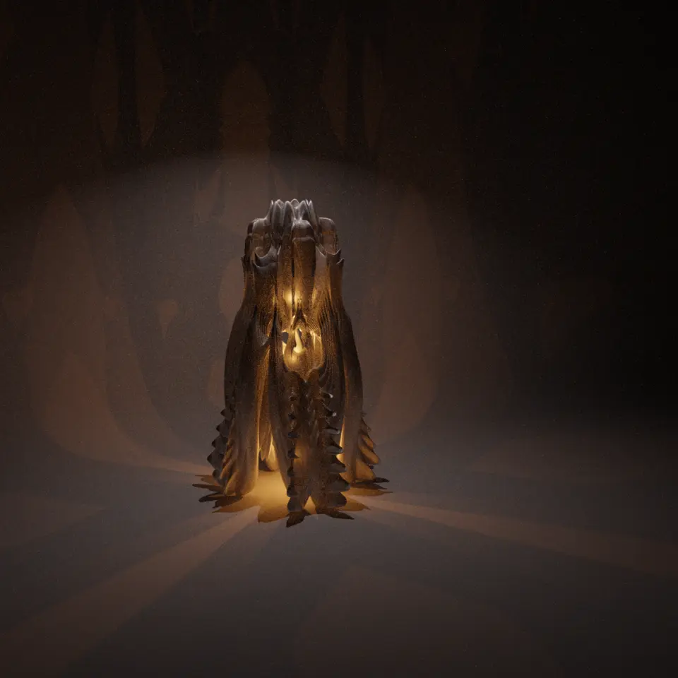
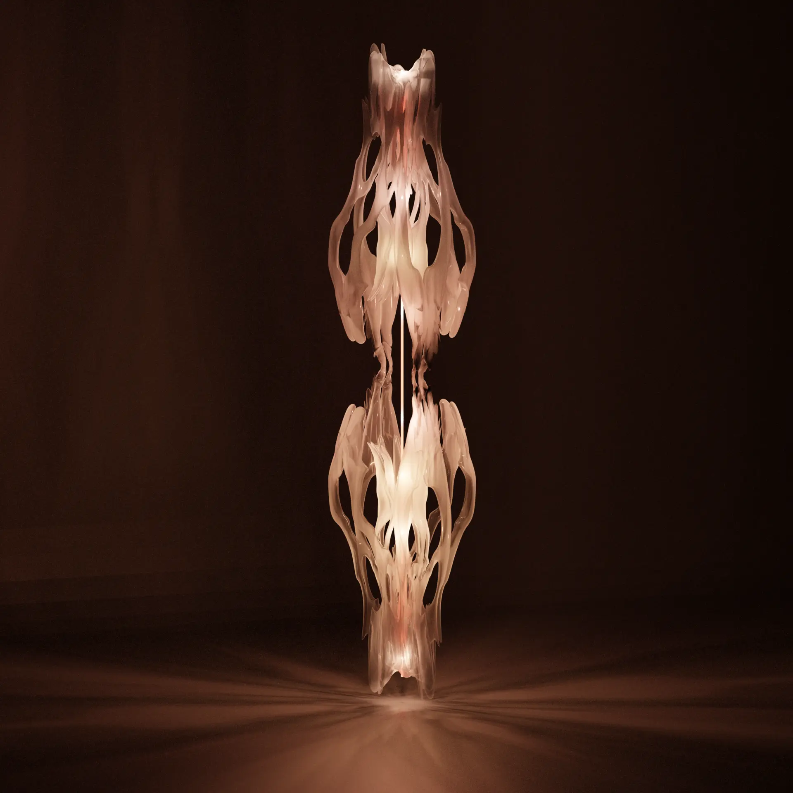
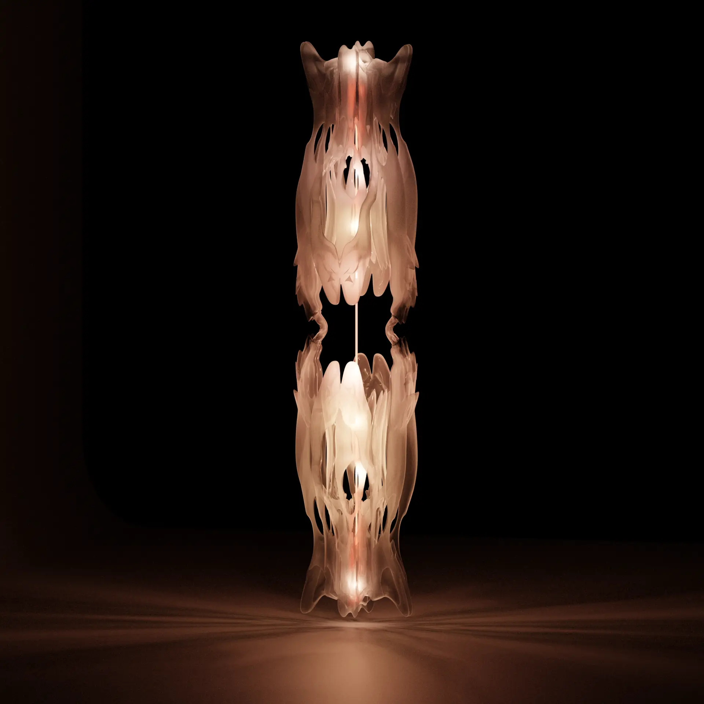

outils:
Rhino-grasshopper |
blender |
definition:
LIGHT-CULTE
FR:
LIGHT-CULTE est une série d'expérimentation esthétique,
d'altération structurelle en vue de créer des formes,
des objets,
par un principe d'anamorphose
usant de l'optimisation topologique
pour des structures n'en ayant pas besoin
faisant de cette technologie
un altérateur anamorphique structurelle.
ENG:
LIGHT-CULTE est une série d'expérimentation aesthetic,
d'altération structurelle in order to create forms and objects,
through a principle of anamorphosis
using topological optimisation
for structures that don't need it
making this technology
un altérateur anamorphique structurelle.
 




